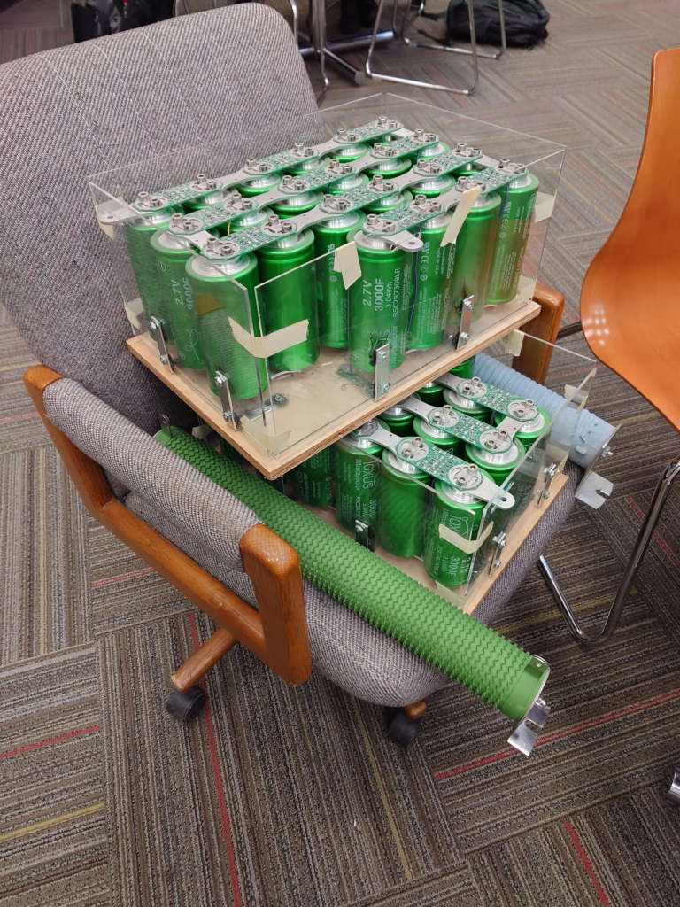

The earliest evidence of seriously thinking about how to engineer a parallel
cable robot comes from when I was finishing my third year in college, and the
choice of what I would have to do for my two senior design classes came into
question. While this never happened, one idea I considered pitching was a cross
departmental project where I would create a 1m gantry and be a member on both
on the mechanical team and the electrical team to fulfill the requirements for
both undergrad engineering degrees. That system if ever proposed would have not
been high performance, certainly enough to whip around some mass but for cost
reasons probably implemented with stepper-servos and somewhat flexible line to
permit some tolerance in the motor positioning.
From here, the exact history of how the system developed over time is at best
murky, and I'm constructing this from various text messages, emails with
professors, and even dates of random scribbles on scrap paper and digital class
notes. My next burst seems to be inspired by my mechanical vibrations class,
really a mathematical duplicate of my EE systems class but with a mechanical
setup and a fear of sqrt(-1). Regardless, it's clear that I had a need for
speed, and that I was obsessed with the idea that the speed of sound down a
rope could be my limitation--roughly, that if mechanical reflections can not be
avoided, a rope that exhibits 1000 m/s longitudal wave propegation that is 4 m
long will consequently take 4 ms for any force created by the motor to
propagate to the load. This doesn't sound horrible if the gantry gracefully
moves around, but given I arbitrarily picked 100 m/s, 1000 m/s wouldn't cut it.
Furthermore, terminating a line would be problematic, and ideally I account for
a force applied from the motor reflecting on the load, and returning to the
drive motor 8 ms after the force was first applied.
More pragmatically, a fast propegation speed is indicitive of a material with
little stretch, and moreover one that has a high ratio of energy transmitted
versus energy stored, making for a responsive cable system. Regardless of the
exact formulation, the answer I decided on was carbon-fiber-cored rope inspired
by the monodirectional carbon fiber construction of the Design-Build-Fly planes
I worked on at the time. I envisioned that carbon fiber strands be packed into
a ~1.5mm diameter core with every strand going directly down the length of the
rope, with a braided sheath to protect the strands. The parameter I cared for
most at the time was the incredible 12 km/s propegation speed down such a
construction, but it more importantly is an incredibly strong and low
elongation material. Using what I know now, I think making a such a custom rope
would have been horribly overkill, expensive, and really not that much better
than some of the particularly spiffy engineering materials that I had initially
overlooked. But, it probably would have worked.
In same months, I was also getting increasingly disappointed with the lack of
engagement my classes were giving me even though I was taking nearly double the
classes a normal engineering major at my school should have been taking. The
common theme was that many of the classes were simply below the level of
material I had seen before, or completely redundant. I've already mentioned
vibrations was redundant, but my prior electronics co-op working on forklift
systems and the one after on multilevel flying-capacitor solar inverters really
made my two lab classes busywork, the compsci-related classes not novel, and
only leaving microelectronics left. Good class, wish it wasn't taught quite so
surface level, but I still learned and formalized a lot. Regardless, I wanted
to do more, and it was decided that I would also design the power converters.
To me at the time, this meant the motor controllers rather than using off the
shelf parts, as well as designing the AC/DC converter that would yield me
power, going as far as to pay attention to PFC and the harmonic spectrum sent
to the grid. There was one big gotcha that stood in my way though, like many of
my projects before: power. I'm sure I could get a good wallop of power if I
were to find the right plug, possibly taking advantage of the fact my apartment
has my kitchen and bedroom on opposite sides of a split phase system. But, the
fundamental limit how fast I can go is ultimately a function of how much energy
I can store, and how much I can yank from the wall. Enough energy storage in
in the form of caps is expensive though, so unless I got lucky I only had
4800 W available, a far cry from the powers needed for my ultimate goal.
One day, I get a text message that the aero dept was allowing select students
on Design-Build-Fly and Rocketry to ransack the lab of an aerospace professor
that left a ton of hardware behind, and that one of them asked me to join to
see what's there. I immediately ran over and was prompted anything not tagged
was fair game. I grabbed a couple power resistors, but what really changed the
game were these banks that in total contained 44x can-sized ultracapacitors.
The ultra- prefix is very real I might add, with each being 3000 F, albiet only
at 2.7 Vmax each. That right, three thousand farads. I knew of single
digit farad supercapacitors and even used one for my electrical senior design,
but being able to hold hardware that unapologetically could be described in the
kilofarad range remains a high-point of my college experience.
Here's what that haul looked like:

So where am I getting with this? Well, I just got a very large capacitor that
entirely solves my energy storage problem. I ended up too busy to continue
until after I graduated six months later, but I knew these caps were good for
as much as 10kA pulsed and one very simple derivation that showed what I had:
0.5 * m * v^2 = 44 * 0.5 * C * V^2
v = sqrt(44 * C * V^2 / m); C = 3kF, V = 2.7V, m = 5kg
v = 438 m/s assuming no losses.
Obviously, "no losses" is carrying a lot of weight, but the energy is there.
<-prev home next->